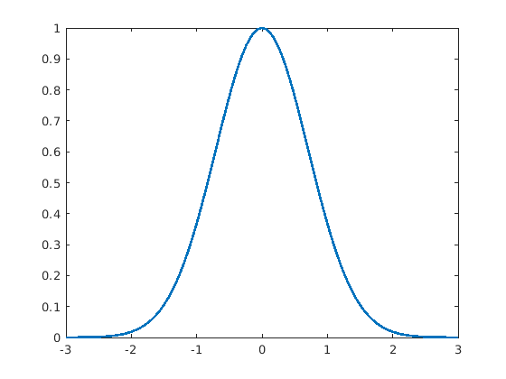
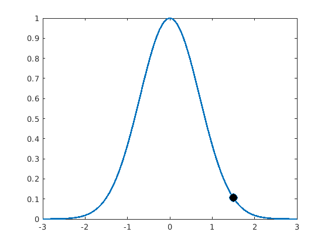
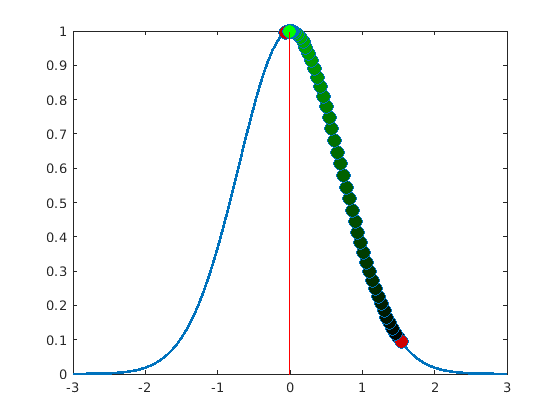
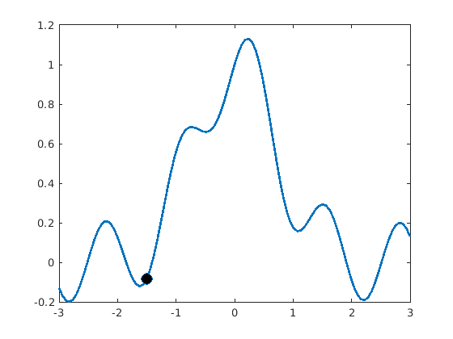
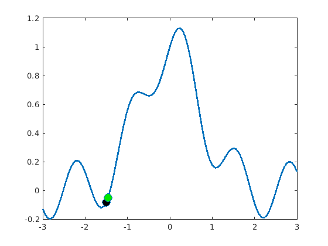
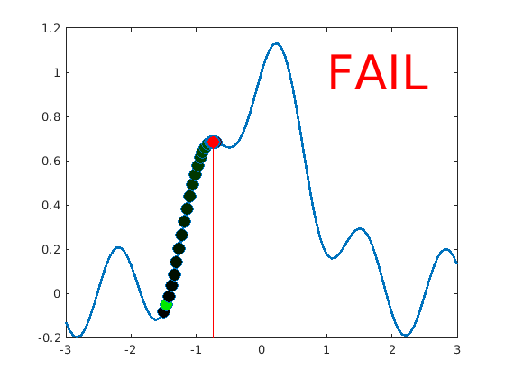

Optimization
Very often, researchers are interested in finding the input values of a function that optimize some output. Efficient ways of doing this is an extremely important field of mathematics. In general, the way to imagine optimization is to think of a hiker in a hilly landscape who is trying to find the highest (or lowest) point possible. The hiker can't see the landscape but can tell the exact height of their location.
Contents
Hill-climbing
This is a broad family of algorithms that are relatively easy to understand: You start somewhere, take a step, and decide whether to step back or not. Let's start with a simple function.
Let's start by using one of those anonymous functions:
clear
objective = @(x) exp(-x.^2);
xax = linspace(-3, 3, 101);
plot(xax, objective(xax), 'linewidth', 2)
 We need to start by picking some starting point, and a step size:
step_size = 0.04; current_point = 1.5;
To visualize, let's plot the function and the current point
current_height = objective(current_point); line(current_point, current_height, ... 'markerfacecolor', [0 0 0], 'markersize', 10, 'marker', 'o')
Try one step
new_point = current_point + step_size; new_height = objective(new_point); % Check if the step was a good one if new_height >= current_height % If yes, move there current_point = new_point; current_height = new_height; line(current_point, current_height, ... 'markerfacecolor', [0 rand 0], ... 'markersize', 10, 'marker', 'o') else % Otherwise, turn around step_size = -step_size; line(new_point, new_height, ... 'markerfacecolor', [rand 0 0], ... 'markersize', 10, 'marker', 'o') end

Now do that a bunch of times
n_steps = 50; for s = 1:n_steps new_point = current_point + step_size; new_height = objective(new_point); if new_height >= current_height current_point = new_point; current_height = new_height; line(current_point, current_height, ... 'markerfacecolor', [1 1 1], ... 'markersize', 10, 'marker', 'o') line(current_point, current_height, ... 'markerfacecolor', [0 s/n_steps 0], ... 'markersize', 10, 'marker', 'o') else step_size = -step_size * 2/3; line(new_point, new_height, ... 'markerfacecolor', [1 1 1], ... 'markersize', 10, 'marker', 'o') line(new_point, new_height, ... 'markerfacecolor', [s/n_steps 0 0], ... 'markersize', 10, 'marker', 'o') end pause(.25) end line([current_point current_point], ... [min(ylim) new_height], 'color', [1 0 0])
Another objective function
So that worked nicely! Let's try a different function!
clear
objective = @(x) exp(-x.^2) + sin(x*5) / 5;
xax = linspace(-3, 3, 101);
plot(xax, objective(xax), 'linewidth', 2)

We need to start by picking some starting point, and a step size:
step_size = 0.04; current_point = -1.5;
To visualize, let's plot the function and the current point
current_height = objective(current_point); line(current_point, current_height, ... 'markerfacecolor', [0 0 0], 'markersize', 10, 'marker', 'o')
Try one step
new_point = current_point + step_size; new_height = objective(new_point); % Check if the step was a good one if new_height >= current_height % If yes, move there current_point = new_point; current_height = new_height; line(current_point, current_height, ... 'markerfacecolor', [0 rand 0], ... 'markersize', 10, 'marker', 'o') else % Otherwise, turn around step_size = -step_size; line(new_point, new_height, ... 'markerfacecolor', [rand 0 0], ... 'markersize', 10, 'marker', 'o') end
Now do that a bunch of times
n_steps = 50; for s = 1:n_steps new_point = current_point + step_size; new_height = objective(new_point); if new_height >= current_height current_point = new_point; current_height = new_height; line(current_point, current_height, ... 'markerfacecolor', [1 1 1], ... 'markersize', 10, 'marker', 'o') line(current_point, current_height, ... 'markerfacecolor', [0 s/n_steps 0], ... 'markersize', 10, 'marker', 'o') else step_size = -step_size * 2/3; line(new_point, new_height, ... 'markerfacecolor', [1 1 1], ... 'markersize', 10, 'marker', 'o') line(new_point, new_height, ... 'markerfacecolor', [s/n_steps 0 0], ... 'markersize', 10, 'marker', 'o') end pause(.25) end line([current_point current_point], ... [min(ylim) new_height], 'color', [1 0 0]) text(1,1,'FAIL','fontsize',40,'color','red')